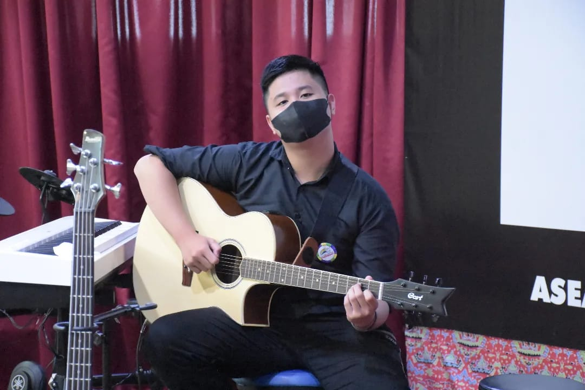

-
Hi! I'm RichardProgrammer
-

0%
Web Programming
0%
Mobile Programming
0%
UI/UX Design
0%
IT Analyst
-
Richard Ricardo
- NPM - 21312024
- College - Universitas Teknokrat Indonesia
- Informatics
- Programming
- Web Programming
- IF 21 A
-
Educational Background
- SD - Xaverius 1 BandarLampung
- SMP - Xaverius 1 BandarLampung
- SMKK - BPK Penabur BandarLampung - Accountant
- College - Universitas Teknokrat Indonesia
- ABOUT ME
- Hi! my name is Richard, Im a Christian, I am a 20 year old male, I was born on December 12, 2002 in Tanjung Karang. I like sports like basketball, futsal, badminton. And also I am interested in the art of drawing. I have skills in two fields, namely accounting and computers. in accounting I can make a complete financial cycle report. And in computer science, I'm deep into web and mobile development using javascript and kotlin respectively and already in object oriented. My other main skill is in music. I can play piano, guitar, keyboard, drums and bass. but I'm an expert on the guitar.
